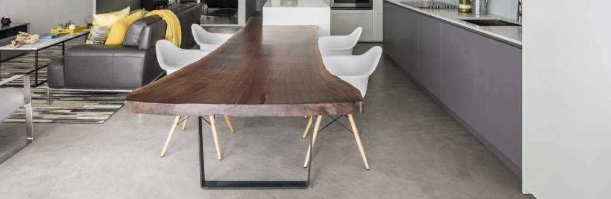

La maison la plus célèbre des médias sociaux est conçue avec Topciment 26/08/2020
 - copia.jpg)
L'architecte Carles Faus a conçu la maison la plus virale de
le moment : une belle maison située à Denia qui se distingue
pour sa luminosité et son effet de continuité grâce à la
application du microciment.
Nouveau Vernis Scellant Antidérapant! 30/03/2020

Topsealer WT Ansti Slip rejoint la famille des vernis de
scellement pour offrir un produit clé pour les surfaces de béton
ciré: le scellant antidérapant.
Topciment change son image! 13/01/2020

De Topciment, nous avons décidé de faire un pas de plus en ce qui concerne le design et nous avons mis à jour notre image et l'esthétique de nos cubes.
Nous présentons notre gamme de produits Sttandard , de même qualité et performance, mais avec une image renouvelée beaucoup plus visuelle et actuelle, toujours sans perdre de l'essence Topciment.
Lire la suiteTopciment présente Efectto! 13/01/2020

Topciment présente Efectto, la nouvelle gamme de revêtements continus et prêts à l'emploi de haute décoration.
Efectto est une très large gamme de produits avec une grande variété de finitionsEfectto> qui se dévoileront dans les prochains mois. Le premier de ces nouveaux produits à voir la lumière est l'effet Quartz.
Lire la suiteCuisine des comptoirs avec du béton ciré?13/01/2020

Il existe de nombreux types de matériaux pour les plans de travail de cuisine, moins cher et plus coûteux, mais le béton ciréTopciment est un option différente de toutes les solutions disponibles sur le marché. Nous disons tout ici pour que vous puissiez choisir le comptoir de cuisine : résistant, hygiénique, facile à nettoyer et maintenir.
Lire la suiteConception et le confort des espaces extérieurs.13/01/2020
Topciment présente la dernière solution pour les extérieurs, les terrasses, balcons et patios, le béton ciréextérieur Microstone. Il s'agit de le produit le plus innovant en matière de revêtements décoratifs continus parce qu'elle réalise un travail propre, agréable et d'avant-garde l'environnement.
Lire la suiteRevêtements muraux avec Topciment 13/01/2020

Le revêtement des murs de certaines des pièces, ou de l'ensemble maison, nous donne de la qualité et un résultat esthétique et durable, surtout dans les murs qui nécessitent une hygiène et un nettoyage constants, comme ceux de la cuisine ou de la salle de bains.
Lire la suiteTopciment recommande Feston pour une application parfaite. 13/01/2020

Une bonne application du béton ciréest conditionnée par plusieurs facteurs, le fait d'avoir des produits de qualité, la technique d'application, mais en utilisant également les meilleurs outils.
Lire la suite5 clés pour la rénovation réussie des salles de bains 13/01/2020

Nous passons beaucoup de temps dans la salle de bains et nous ne donnons pas toujours il a beaucoup réfléchi. Voici donc 5 conseils pour rénover avec succès votre salle de bains et lui donner le style et la décoration qu'elle mérite.
Lire la suiteErreurs à éviter lors de la combinaison des couleurs 13/01/2020

Dans Topciment, nous vous proposons quelques astuces pour réussir à redéfinir les différents espaces de la maison.
Lire la suiteLe béton cirédans les cuisines13/01/2020

Le béton ciréest un matériau neutre qui se combine dans tout type de cuisine, du classique au contemporain, avec notamment industrielle et nordique.
Lire la suiteLe microcrédit sans problème 13/01/2020

Comment éviter les problèmes liés au béton ciré? Une demande avec Les produits Topciment garantissent des produits de la meilleure qualité, des applicateurs et experts certifiés en microciment
Lire la suiteNouveaux produits pour le nettoyage et l'entretien du microciment 13/01/2020

Topciment lance sur le marché quatre nouveaux produits spécialement formulé pour le soin, l'entretien et le nettoyage de microciment.
Lire la suiteTopciment renouvelle avec CYPE pour une année supplémentaire13/01/2020
Topciment a renouvelé pour un an avec Cype et avec cet accord, il continuera à fournir des services aux professionnels de la construction en termes de préparer les budgets pour les travaux avec le microciment.
Lire la suite